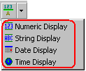

|
|
|
|
|
|
|
|
You can use the Data Display tool to create the following parts that can display data at runtime: Numeric Display, String Display, Date Display, and Time Display.

For information on how to create a Numeric Display, see Section 11.3, Displaying Values Using Numeric Display.
For information on how to create a Date Display, see Section 11.4, Displaying Dates Using Date Display.
For information on how to create a Time Display, see Section 11.5, Displaying Time Using Time Display.
For information on how to create a String Display, see Section 11.6, Displaying Text Using String Display.
Data Display parts can display variable values, the time or date, and all the settings can be quickly configured through a dialog box.

For more information on each setting, see the corresponding section in the following table.
|
Tab |
Settings |
Section |
|
General Tab |
Basic settings such as data type, variable name, object and label format, and alignment. |
11.2.1, General Tab |
|
Input Mode Tab |
Specifies input functions, such as use of pop-up keypad, bar code input, and tab groups. |
11.2.2, Input Mode Tab |
|
Color Tab |
Color settings. |
11.2.3, Color Tab |
|
Visibility Tab |
Defines visibility and blink settings for the data display. |
11.2.4, Visibility Tab |
|
Advanced Tab |
Sets up various advanced operations such as interlock, input trigger, input status variable, and status mode. |
11.2.5, Advanced Tab |